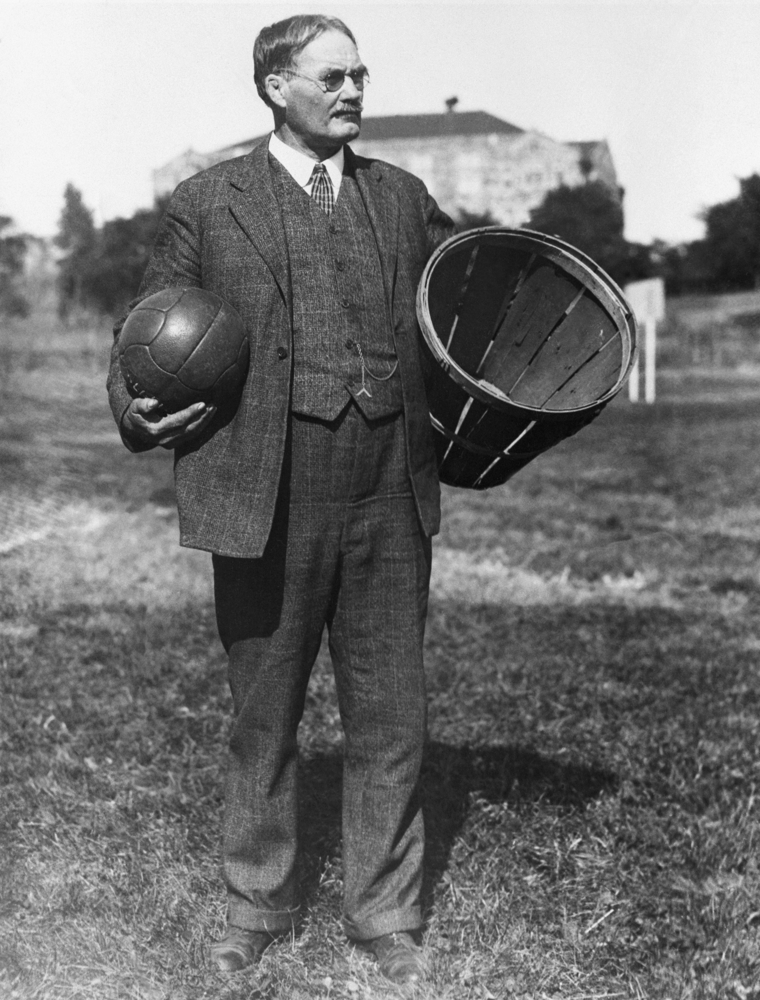
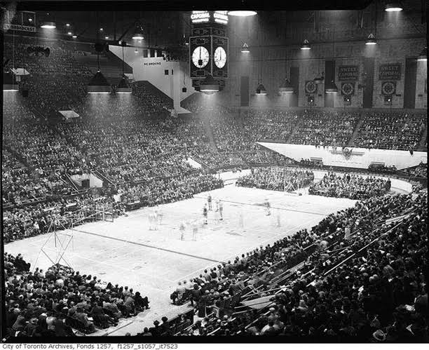

Sobre Mim
Entusiasta de basquete que compartilha conhecimento sobre estatísticas, times e jogadores da NBA. Este site foi criado para ajudar fãs a entenderem melhor o jogo.
O que é este site?
Uma plataforma completa com rankings, estatísticas de jogadores, históricos de jogos e notícias do mundo da NBA.
Mundo da NBA
Tudo sobre a NBA: resultados, classificações, desempenhos e as últimas novidades do basquetebol profissional.
História do Basquete

O basquete foi inventado em dezembro de 1891 por James Naismith, um professor de educação física canadense. Ele criou o jogo para manter seus alunos ocupados durante os meses rigorosos do inverno em Springfield, Massachusetts. O primeiro jogo foi disputado com nove jogadores em cada lado e usando uma cesta de pêssegos como cesta.
Em 1896, o primeiro jogo profissional foi realizado, e em 1946, a Basketball Association of America (BAA) foi fundada e assim, ocorreu o 1º jogo de basquete da história, entre New York Knicks e Toronto Huskies, que mais tarde se fundiu com a National Basketball League (NBL) para formar a NBA em 1949. Desde então, o esporte cresceu para se tornar um fenômeno global, com a NBA sendo a principal liga profissional do mundo.

Galeria de Imagens

Aqui observamos o maior arremessador de 3 pontos da história da NBA, Wardell Stephen Curry II